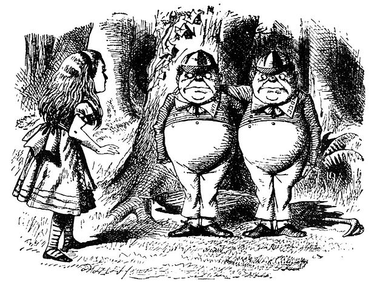

2 预备章节

2.1 集合：属性、元素、外延
2.1.1 Extensionality
A
It does not matter how we
Extensionality licenses some notation. In general, when we have some objects \(a_{1}, \cdots, a_{n}\), then \(\lbrace a_{1}, \cdots, a_{n}\rbrace\) is
\[\lbrace a, a, b \rbrace = \lbrace a, b \rbrace = \lbrace b,a \rbrace. \]
This delivers on the point that, when we consider sets, we don’t care about the order of their
Frequently we’ll specify a set by some property that its
例 2.2 (property) In our example, we could have specified \(S\) also as \[S = \lbrace x: x \text{ is a sibling of Richard}\rbrace.\]
We read the notation on the right as "the set of \(x\)’s such that \(x\) is perfect and \(0 \leqslant x \leqslant 10\)’’. The identity here confirms that, when we consider sets, we don’t care about how they are specified. And, more generally, extensionality guarantees that there is always only one set of \(x\)’s such that \(\varphi(x)\). So, extensionality justifies calling \(\lbrace x: \varphi(x)\rbrace\)
Extensionality gives us a way for showing that sets are identical: to show that \(A = B\), show that whenever \(x \in A\) then also \(x \in B\), and whenever \(y \in B\) then also \(y \in A\).
2.1.2 Subsets and Power Sets
We will often want to compare sets. And one obvious kind of comparison one might make is as follows:
Extensionality gives a criterion of identity for sets: \(A = B\) iff every
Now is also a good opportunity to introduce some further bits of helpful notation. In defining when \(A\) is a subset of \(B\) we said that “every
Using this notation, we can say that \(A \subseteq B\) iff \((\forall x \in A)x \in B\).
Now we move on to considering a certain kind of set: the set of all subsets of a given set.
2.1.3 Some Important Sets
例 2.7 (Some Important Sets) We will mostly be dealing with sets whose
- \(\mathbb{N} = \lbrace 0, 1, 2, 3, \cdots\rbrace\) ➠ the set of natural numbers
- \(\mathbb{Z} = \lbrace \cdots, -2, -1, 0, 1, 2, \cdots\rbrace\) ➠ the set of integers
- \(\mathbb{Q} = \lbrace \frac{m}{n}: m, n \in \mathbb{Z} \text{ and }n \neq 0\rbrace\) ➠ the set of rationals
- \(\mathbb{R} = \lbrace (-\infty, \infty)\rbrace\) ➠ the set of real numbers (the continuum)
These are all
As we move through these sets, we are adding
例 2.8 (Strings) Another interesting example is the set \({A}^{*}\) of
\[\mathbb{B}^*=\lbrace \Lambda,0,1,00,01,10,11,000,001,010,011,100,101,110,111,0000,\cdots\rbrace .\]
If \(x=x_{1}\ldots x_{n}\in A^{*}\) is a string consisting of \(n\) "letters’’ from \(A\), then we say2.1.4 Unions and Intersections
We introduced definitions of sets by abstraction, i.e., definitions of the form \(\lbrace x: \phi(x)\rbrace\). Here, we invoke some property \(\varphi\), and this property can mention sets we’ve already defined. So for instance, if \(A\) and \(B\) are sets, the set \(\lbrace x: x \in A \lor x \in B\rbrace\) consists of all those objects which are
图 2.1: Sets Union
We can also consider a "dual’’ operation to union. This is the operation that forms the set of all
图 2.2: Sets Intersection
We can also form the union or intersection of more than two sets. An elegant way of dealing with this in general is the following: suppose you collect all the sets you want to form the union (or intersection) of into a single set. Then we can define the union of all our original sets as the set of all objects which belong to at least one
定义 2.7 (Union Operation) If \(A\) is a set of sets, then \(\bigcup A\) is the set of
\[ \begin{aligned} \bigcup A & = \{x: x \text{ belongs to an element of } A\}, \text{ i.e.,}\\ & = \{x: \text{there is a } B \in A \text{ so that } x \in B\} \end{aligned} \]
定义 2.8 (Intersection Operation) If \(A\) is a set of sets, then \(\bigcap A\) is the set of objects which all elements of \(A\) have in common:
\[ \begin{aligned} \bigcap A & = \{x: x \text{ belongs to every element of } A\}, \text{ i.e.,}\\ & = \{x: \text{for all } B \in A, x \in B\} \end{aligned} \]We could also do the same for a sequence of sets \(A_1\), \(A_2, \cdots\),
\[ \begin{aligned} \bigcup_i A_i & = \{x: x \text{ belongs to one of the } A_i\}\\ \bigcap_i A_i & = \{x: x \text{ belongs to every } A_i\}. \end{aligned} \]
When we have an
\[ \begin{aligned} \bigcup_{i \in I} A_i & = \bigcup \{A_i: i \in I\}\\ \bigcap_{i \in I} A_i & = \bigcap\{A_i: i \in I\} \end{aligned} \]
Finally, we may want to think about the set of all
图 2.3: Sets Difference
2.1.5 Pairs, Tuples, Cartesian Products
It follows from extensionality that sets have no order to their elements. So if we want to represent order, we use
How should we think about ordered pairs in set theory? Crucially, we want to preserve the idea that ordered pairs are identical iff they share the same first element and share the same second element, i.e.: \[⟨a, b⟩= ⟨c, d⟩\text{ iff both }a = c \text{ and }b=d.\] We can define ordered pairs in set theory using the Wiener-Kuratowski definition.
Having fixed a definition of an ordered pair, we can use it to define further sets. For example, sometimes we also want ordered sequences of more than two objects, e.g.,
Certain sets of ordered pairs, or other ordered \(n\)-tuples, will be useful.
例 2.14 If \(A\) is a set, the product of \(A\) with itself, \(A \times A\), is also written \(A^2\). It is the set of
\[\begin{align*} A^1 & = A\\ A^{k+1} & = A^k \times A \end{align*}\]
PROOF: For every
To visualize this, arrange the
Since the \(x_i\) are all different, and the \(y_j\) are all different, no two of the pairs in this grid are the same, and there are \(n\cdot m\) of them.\[ \begin{array}{rcccc} B_{x_1} = & \{⟨x_1, y_1⟩ & ⟨x_1, y_2⟩ & \cdots & ⟨x_1, y_m⟩\}\\ B_{x_2} = & \{⟨x_2, y_1⟩ & ⟨x_2, y_2⟩ & \cdots & ⟨x_2, y_m⟩\}\\ \vdots & & \vdots\\ B_{x_n} = & \{⟨x_n, y_1⟩ & ⟨x_n, y_2⟩ & \cdots & ⟨x_n, y_m⟩\} \end{array} \]
2.1.6 Russell’s Paradox
Extensionality licenses the notation \(\lbrace x: \phi(x)\rbrace\), for
But this conditional is important! Crucially, not every property lends itself to
Sets may be
Russell’s Paradox arises when we consider the property of not having itself as an
Let’s run through the proof that no set \(R\) of non-self-membered sets can exist more slowly. If \(R\) exists, it makes sense to ask if \(R \in R\) or not—it must be either \(\in R\) or \(\notin R\). Suppose the former is true, i.e., \(R \in R\). \(R\) was defined as the set of all sets that are not
Since the assumption that \(R \in R\) leads to a contradiction, we have \(R \notin R\). But this also leads to a contradiction! For if \(R \notin R\), it does have the defining property of \(R\), and so would be an
How do we set up a set theory which avoids falling into Russell’s Paradox, i.e., which avoids making the
The set theory sketched in this chapter doesn’t do this. It’s
2.2 关系：集合上的结构
2.2.1 Relations as Sets
In §1.0.2（P.19）, we mentioned some important sets: \(\mathbb{N}\), \(\mathbb{Z}\), \(\mathbb{Q}\), \(\mathbb{R}\). You will no doubt remember some interesting relations between the
For this, recall two things from §1.0.4（P.22）. First, recall the notion of a
Now we will consider a particular relation on a set: the \(<\)-relation on the set \(\mathbb{N}\) of natural numbers. Consider the set of all pairs of numbers \(⟨n, m⟩\) where \(n < m\), i.e., \[R= \lbrace ⟨n, m⟩: n, m \in \mathbb{N} \text{ and } n < m \rbrace.\] There is a close connection between \(n\) being less than \(m\), and the pair \(⟨n, m⟩\) being a member of \(R\), namely: \[n < m \text{ iff }⟨n, m⟩ \in R.\] Indeed, without any loss of information, we can consider the set \(R\) to
In the same way we can construct a subset of \(\mathbb{N}^{2}\) for any relation between numbers. Conversely, given any set of pairs of numbers \(S \subseteq \mathbb{N}^{2}\), there is a corresponding relation between numbers, namely, the relationship \(n\) bears to \(m\) if and only if \(⟨n, m⟩ \in S\). This justifies the following definition:
{{% dtpc title=“☯定義 1.11【Binary relation】” %}}
A
{{% dtpcex title=“☯例 1.15” %}} The set \(\mathbb{N}^{2}\) of pairs of natural numbers can be listed in a 2-dimensional matrix like this:
\[ \begin{array}{ccccc} \mathbf{⟨0,0⟩} & ⟨0,1⟩ & ⟨0,2⟩ & ⟨0,3⟩ & \cdots\\ ⟨1,0⟩ & \mathbf{⟨1,1⟩} & ⟨1,2⟩ & ⟨1,3⟩ & \cdots\\ ⟨2,0⟩ & ⟨2,1⟩ & \mathbf{⟨2,2⟩} & ⟨2,3⟩ & \cdots\\ ⟨3,0⟩ & ⟨3,1⟩ & ⟨3,2⟩ & \mathbf{⟨3,3⟩} & \cdots\\ \vdots & \vdots & \vdots & \vdots & \mathbf{\ddots} \end{array} \]
We have put the diagonal, here, in bold, since the subset of \(\mathbb{N}^2\) consisting of the pairs lying on the diagonal, i.e., \[\lbrace ⟨0,0 ⟩, ⟨ 1,1 ⟩, ⟨ 2,2 ⟩, \cdots\rbrace ,\] is the
Although orders and identity are important and natural relations, it should be emphasized that according to our definition
Problem 1.10 List theelement s of the relation \(\subseteq\) on the set \(\mathscr{P}({\lbrace a, b, c\rbrace })\).
2.2.2 Philosophical Reflections
In §1.1.0（P.26）, we defined relations as certain sets. We should pause and ask a quick philosophical question: what is such a definition
First: in Definition 1.9, we defined \(⟨a, b⟩ = \lbrace \lbrace a\rbrace , \lbrace a, b\rbrace \rbrace\). Consider instead the definition \(\lVert a, b\rVert = \lbrace \lbrace b\rbrace , \lbrace a, b\rbrace \rbrace = ⟨b,a⟩\). When \(a \neq b\), we have that \(⟨a, b⟩ \neq \lVert a,b\rVert\). But we could equally have regarded \(\lVert a,b\rVert\) as our definition of an ordered pair, rather than \(⟨a,b⟩\). Both definitions would have worked equally well. So now we have two equally good candidates to "be’’ the order relation on the natural numbers, namely:
\[ \begin{aligned} R &= \{⟨n,m⟩: n, m \in \mathbb{N} \text{ and }n < m\}\\ S &= \{\lVert n,m\rVert: n, m \in \mathbb{N} \text{ and }n < m\}. \end{aligned} \]
Since \(R \neq S\), by extensionality, it is clear that they cannot
Second: if we think that
Third: when we “identify’’ relations with sets, we said that we would allow ourselves to write \(Rxy\) for \(⟨x,y⟩ \in R\). This is fine, provided that the membership relation,”\(\in\)’‘, is treated
So where does this leave us? Well, there is nothing
2.2.3 Special Properties of Relations
Some kinds of relations turn out to be so common that they have been given special names. For instance, \(\leqslant\) and \(\subseteq\) both relate their respective domains (say, \(\mathbb{N}\) in the case of \(\leqslant\) and \(\mathscr{P}({A})\) in the case of \(\subseteq\)) in similar ways. To get at exactly how these relations are similar, and how they differ, we categorize them according to some special properties that relations can have. It turns out that (combinations of) some of these special properties are especially important: orders and equivalence relations.
{{% dtpc title=“☯定義 1.12【Reflexivity】” %}}
A relation \(R \subseteq A^2\) is
{{% dtpc title=“☯定義 1.13【Transitivity】” %}}
A relation \(R \subseteq A^2\) is
{{% dtpc title=“☯定義 1.14【Symmetry】” %}}
A relation \(R \subseteq A^2\) is
{{% dtpc title=“☯定義 1.15【Anti-symmetry】” %}}
A relation \(R \subseteq A^2\) is
In a symmetric relation, \(Rxy\) and \(Ryx\) always hold together, or neither holds. In an anti-symmetric relation, the only way for \(Rxy\) and \(Ryx\) to hold together is if \(x = y\). Note that this does not
{{% dtpc title=“☯定義 1.16【Connectivity】” %}}
A relation \(R \subseteq A^2\) is
Problem 1.11 Give examples of relations that are (a) reflexive and symmetric but not transitive, (b) reflexive and anti-symmetric, (c) anti-symmetric, transitive, but not reflexive, and (d) reflexive, symmetric, and transitive. Do not use relations on numbers or sets.
{{% dtpc title=“☯定義 1.17【Irreflexivity】” %}}
A relation \(R \subseteq A^2\) is called
{{% dtpc title=“☯定義 1.18【Asymmetry】” %}}
A relation \(R \subseteq A^2\) is called
Note that if \(A \neq \varnothing\), then no irreflexive relation on \(A\) is reflexive and every asymmetric relation on \(A\) is also anti-symmetric. However, there are \(R \subseteq A^2\) that are not reflexive and also not irreflexive, and there are anti-symmetric relations that are not asymmetric.
2.2.4 Equivalence Relations
The identity relation on a set is reflexive, symmetric, and transitive. Relations \(R\) that have all three of these properties are very common.
{{% dtpc title=“☯定義 1.19【Equivalence relation】” %}}
A relation \(R \subseteq A^2\) that is reflexive, symmetric, and transitive is called an
Equivalence relations give rise to the notion of an
{{% dtpc title=“☯定義 1.20【Equivalence class】” %}}
Let \(R \subseteq A^2\) be an equivalence relation. For each \(x \in A\), the
The next result vindicates the definition of an equivalence class, in proving that the equivalence classes are indeed the partitions of \(A\):
{{% dtpc title=“☯命題 1.2” %}} If \(R \subseteq A^2\) is an equivalence relation, then \(Rxy\) iff \([x]_R = [y]_R\). {{% /dtpc %}}
命題 1.2 之證明 For the left-to-right direction, suppose \(Rxy\), and let \(z \in [x]_R\). By definition, then, \(Rxz\). Since \(R\) is an equivalence relation, \(Ryz\). (Spelling this out: as \(Rxy\) and \(R\) is symmetric we have \(Ryx\), and as \(Rxz\) and \(R\) is transitive we have \(Ryz\).) So \(z \in [y]_R\). Generalising, \([x]_R \subseteq [y]_R\). But exactly similarly, \([y]_R \subseteq [x]_R\). So \([x]_R = [y]_R\), by extensionality. For the right-to-left direction, suppose \([x]_R = [y]_R\). Since \(R\) is reflexive, \(Ryy\), so \(y \in [y]_R\). Thus also \(y \in [x]_R\) by the assumption that \([x]_R = [y]_R\). So \(Rxy\).
{{% dtpcex title=“☯例 1.16” %}} A nice example of equivalence relations comes from modular arithmetic. For any \(a\), \(b\), and \(n \in \mathbb{N}\), say that \(a \equiv_{n} b\) iff dividing \(a\) by \(n\) gives remainder \(b\). (Somewhat more symbolically: \(a \equiv_{n} b\) iff \((\exists k \in \mathbb{N})a - b = kn\).) Now, \(\equiv_{n}\) is an equivalence relation, for any \(n\). And there are exactly \(n\) distinct equivalence classes generated by \(\equiv_{n}\); that is, \({\mathbb{N}/}_{\equiv_{n}}\) has \(n\) elements. These are:
the set of numbers divisible by \(n\) without remainder, i.e., \([0]_{\equiv_{n}}\);
the set of numbers divisible by \(n\) with remainder \(1\), i.e., \([1]_{\equiv_{n}}; \cdots\);
and the set of numbers divisible by \(n\) with remainder \(n-1\), i.e., \([n-1]_{\equiv_{n}}\). {{% /dtpcex %}}
Problem 1.12 Show that \(\equiv_{n}\) is an equivalence relation, for any \(n \in \mathbb{N}\), and that \({\mathbb{N}/}_{\equiv_{n}}\) has exactly \(n\) members.
2.2.5 Orders
Many of our comparisons involve describing some objects as being "less than’‘, "equal to’‘, or "greater than’’ other objects, in a certain respect. These involve
{{% dtpc title=“☯定義 1.21【Preorder】” %}}
A relation which is both reflexive and transitive is called a
{{% dtpc title=“☯定義 1.22【Partial order】” %}}
A preorder which is also anti-symmetric is called a
{{% dtpc title=“☯定義 1.23【Linear order】” %}}
A partial order which is also connected is called a
Every linear order is also a partial order, and every partial order is also a preorder, but the converses don’t hold.
{{% dtpcex title=“☯例 1.17” %}}
Every linear order is also a partial order, and every partial order is also a preorder, but the converses don’t hold. The universal relation on \(A\) is a preorder, since it is reflexive and transitive. But, if \(A\) has more than one
{{% dtpcex title=“☯例 1.18” %}}
Consider the
{{% dtpcex title=“☯例 1.19” %}} An important partial order is the relation \(\subseteq\) on a set of sets. This is not in general a linear order, since if \(a \neq b\) and we consider \(\mathscr{P}(\lbrace a, b\rbrace ) = \lbrace \varnothing, \lbrace a\rbrace , \lbrace b\rbrace , \lbrace a,b\rbrace \rbrace\), we see that \(\lbrace a\rbrace \nsubseteq \lbrace b\rbrace\) and \(\lbrace a\rbrace \neq \lbrace b\rbrace\) and \(\lbrace b\rbrace \nsubseteq \lbrace a\rbrace\). {{% /dtpcex %}}
{{% dtpcex title=“☯例 1.20” %}}
The relation of
{{% dtpc title=“☯定義 1.24【Strict order】” %}}
A
{{% dtpc title=“☯定義 1.25【Strict linear order】” %}}
A strict order which is also connected is called a
{{% dtpcex title=“☯例 1.21” %}} \(\leqslant\) is the linear order corresponding to the strict linear order \(<\). \(\subseteq\) is the partial order corresponding to the strict order \(\subsetneq\). {{% /dtpcex %}}
{{% dtpc title=“☯定義 1.26【Total order】” %}}
A strict order which is also connected is called a
Any strict order \(R\) on \(A\) can be turned into a partial order by adding the diagonal Id\(_{A}\), i.e., adding all the pairs \(⟨x, x⟩\). (This is called the
{{% dtpc title=“☯命題 1.3” %}} If \(R\) is a strict order on \(A\), then \(R^+ = R \cup Id_A\) is a partial order. Moreover, if \(R\) is total, then \(R^+\) is a linear order. {{% /dtpc %}}
命題 1.3 之證明 1. Suppose \(R\) is a strict order, i.e., \(R \subseteq A^2\) and \(R\) is irreflexive, asymmetric, and transitive. Let \(R^+ = R \cup Id_A\). We have to show that \(R^+\) is reflexive, antisymmetric, and transitive. 1. \(R^+\) is clearly reflexive, since \(⟨x, x⟩ \in Id_A \subseteq R^+\) for all \(x \in A.\) 1. To show \(R^+\) is antisymmetric, suppose for reductio that \(R^+xy\) and \(R^+yx\) but \(x \neq y\). Since \(⟨x,y⟩ \in R \cup Id_X\), but \(⟨x, y⟩ \notin Id_X\), we must have \(⟨x, y⟩ \in R\), i.e., \(Rxy\). Similarly, \(Ryx\). But this contradicts the assumption that \(R\) is asymmetric. 1. To establish transitivity, suppose that \(R^+xy\) and \(R^+yz\). If both \(⟨x, y⟩ \in R\) and \(⟨y,z⟩ \in R\), then \(⟨x, z⟩ \in R\) since \(R\) is transitive. Otherwise, either \(⟨x, y⟩ \in Id_X\), i.e., \(x = y\), or \(⟨y, z⟩ \in Id_X\), i.e., \(y = z\). In the first case, we have that \(R^+yz\) by assumption, \(x = y\), hence \(R^+xz\). Similarly in the second case. In either case, \(R^+xz\), thus, \(R^+\) is also transitive. 1. Concerning the "moreover’’ clause, suppose \(R\) is a total order, i.e., that \(R\) is connected. So for all \(x \neq y\), either \(Rxy\) or \(Ryx\), i.e., either \(⟨x, y⟩ \in R\) or \(⟨y, x⟩ \in R\). Since \(R \subseteq R^+\), this remains true of \(R^+\), so \(R^+\) is connected as well.
{{% dtpc title=“☯命題 1.4” %}} If \(R\) is a partial order on \(X\), then \(R^- = R \setminus Id_X\) is a strict order. Moreover, if \(R\) is linear, then \(R^-\) is total. {{% /dtpc %}}
命題 1.4 之證明 This is left as an exercise.
Problem 1.4 Give a proof of Proposition 1.4.
{{% dtpcex title=“☯例 1.22” %}} \(\leqslant\) is the linear order corresponding to the total order \(<\). \(\subseteq\) is the partial order corresponding to the strict order \(\subsetneq\). {{% /dtpcex %}}
The following simple result which establishes that total orders satisfy an extensionality-like property:
{{% dtpc title=“☯命題 1.5” %}} If \(<\) totally orders \(A\), then: \[(\forall a, b \in A)((\forall x \in A)(x < a \leftrightarrow x < b) \rightarrow a = b)\] {{% /dtpc %}}
命題 1.5 之證明 Suppose \((\forall x \in A)(x < a \leftrightarrow x < b)\). If \(a < b\), then \(a < a\), contradicting the fact that \(<\) is irreflexive; so \(a \nless b\). Exactly similarly, \(b \nless a\). So \(a = b\), as \(<\) is connected.
2.2.6 Graphs
A
{{% dtpc title=“☯定義 1.27【Directed graph】” %}}
A
According to our definition, a graph just is a set together with a relation on that set. Of course, when talking about graphs, it’s only natural to expect that they are graphically represented: we can draw a graph by connecting two vertices \(v_1\) and \(v_2\) by an arrow iff \(⟨v_1, v_2⟩ \in E\). The only difference between a relation by itself and a graph is that a graph specifies the set of vertices, i.e., a graph may have isolated vertices. The important point, however, is that every relation \(R\) on a set \(X\) can be seen as a directed graph \(⟨X, R⟩\), and conversely, a directed graph \(⟨V, E⟩\) can be seen as a relation \(E \subseteq V^2\) with the set \(V\) explicitly specified.
{{% dtpcex title=“☯例 1.23” %}} The graph \(⟨V, E⟩\) with \(V = \lbrace 1, 2, 3, 4\rbrace\) and \(E = \lbrace ⟨1,1⟩, ⟨1, 2⟩, ⟨1, 3⟩, ⟨2, 3⟩\rbrace\) looks like this:

zzzz.png
This is a different graph than \(⟨V', E⟩\) with \(V' = \lbrace 1, 2, 3\rbrace\), which looks like this:
 {{% /dtpcex %}}
{{% /dtpcex %}}
Problem 1.14 Consider the less-than-or-equal-to relation \(\leqslant\) on the set \(\lbrace 1, 2, 3, 4\rbrace\) as a graph and draw the corresponding diagram.
2.2.7 Operations on Relations
It is often useful to modify or combine relations. In
Proposition1.3（P.32）, we considered the
{{% dtpc title=“☯定義 1.28【Operations on Relations】” %}}
Let \(R\), \(S\) be relations, and \(A\) be any set.
1. The
{{% dtpcex title=“☯例 1.24” %}} Let \(S \subseteq \mathbb{Z}^2\) be the successor relation on \(\mathbb{Z}\), i.e., \(S = \lbrace⟨x, y⟩ \in \mathbb{Z}^2: x + 1 = y\rbrace\), so that \(Sxy\) iff \(x + 1 = y\). 1. \(S^{-1}\) is the predecessor relation on \(\mathbb{Z}\), i.e., \(\lbrace ⟨x,y⟩\in\mathbb{Z}^2: x -1 =y\rbrace\). 1. \(S\mid S\) is \(\lbrace ⟨x,y⟩\in\mathbb{Z}^2: x + 2 =y\rbrace\) 1. \(S\upharpoonright_{\mathbb{N}}\) is the successor relation on \(\mathbb{N}\). 1. \(S[\lbrace 1,2,3\rbrace ]\) is \(\lbrace 2, 3, 4\rbrace\). {{% /dtpcex %}}
{{% dtpc title=“☯定義 1.29【Transitive closure】” %}}
Let \(R \subseteq A^2\) be a binary relation.
1. The
{{% dtpcex title=“☯例 1.25” %}} Take the successor relation \(S \subseteq \mathbb{Z}^2\). \(S^2xy\) iff \(x + 2 = y\), \(S^3xy\) iff \(x + 3 = y\), etc. So \(S^+xy\) iff \(x + n = y\) for some \(n > 1\). In other words, \(S^+xy\) iff \(x < y\), and \(S^*xy\) iff \(x \le y\). {{% /dtpcex %}}
Problem 1.15 Show that the transitive closure of \(R\) is in fact transitive.
2.3 函数：关系之特例
2.3.1 Basics
A
More generally, functions may take pairs, triples, etc., as inputs and returns some kind of output. Many functions are familiar to us from basic arithmetic. For instance, addition and multiplication are functions. They take in two numbers and return a third.
In this mathematical, abstract sense, a function is a
{{% dtpc title=“☯定義 1.30【Function】” %}}
A
The diagram in Figure 1.3 may help to think about functions. The ellipse on the left represents the function’s

defnoffunction
{{% dtpcex title=“☯例 1.26” %}} Multiplication takes pairs of natural numbers as inputs and maps them to natural numbers as outputs, so goes from \(\mathbb{N} \times \mathbb{N}\) (the domain) to \(\mathbb{N}\) (the codomain). As it turns out, the range is also \(\mathbb{N}\), since every \(n \in \mathbb{N}\) is \(n \times 1\). {{% /dtpcex %}}
{{% dtpcex title=“☯例 1.27” %}} Multiplication is a function because it pairs each input—each pair of natural numbers—with a single output: \(\times \colon \mathbb{N}^2 \to \mathbb{N}\). By contrast, the square root operation applied to the domain \(\mathbb{N}\) is not functional, since each positive integer \(n\) has two square roots: \(\sqrt{n}\) and \(-\sqrt{n}\). We can make it functional by only returning the positive square root: \(\sqrt{\phantom{X}} \colon \mathbb{N} \to \mathbb{R}\). {{% /dtpcex %}}
{{% dtpcex title=“☯例 1.28” %}} The relation that pairs each student in a class with their final grade is a function—no student can get two different final grades in the same class. The relation that pairs each student in a class with their parents is not a function: students can have zero, or two, or more parents. {{% /dtpcex %}}
We can define functions by specifying in some precise way what the value of the function is for every possible argment. Different ways of doing this are by giving a formula, describing a method for computing the value, or listing the values for each argument. However functions are defined, we must make sure that for each argment we specify one, and only one, value.
{{% dtpcex title=“☯例 1.29” %}} Let \(f \colon \mathbb{N} \to \mathbb{N}\) be defined such that \(f(x) = x+1\). This is a definition that specifies \(f\) as a function which takes in natural numbers and outputs natural numbers. It tells us that, given a natural number \(x\), \(f\) will output its successor \(x+1\). In this case, the codomain \(\mathbb{N}\) is not the range of \(f\), since the natural number \(0\) is not the successor of any natural number. The range of \(f\) is the set of all positive integers, \(\mathbb{Z}^{+}\). {{% /dtpcex %}}
{{% dtpcex title=“☯例 1.30” %}} Let \(g \colon \mathbb{N} \to \mathbb{N}\) be defined such that \(g(x) = x+2-1\). This tells us that \(g\) is a function which takes in natural numbers and outputs natural numbers. Given a natural number \(n\), \(g\) will output the predecessor of the successor of the successor of \(x\), i.e., \(x+1\). {{% /dtpcex %}}
We just considered two functions, \(f\) and \(g\), with different
\[h(x) = \begin{cases} \displaystyle\frac{x}{2} & \text{if $x$ is even} \\ \displaystyle\frac{x+1}{2} & \text{if $x$ is odd.} \end{cases}\]
Since every natural number is either even or odd, the output of this function will always be a natural number. Just remember that if you define a function by cases, every possible input must fall into exactly one case. In some cases, this will require a proof that the cases are exhaustive and exclusive. {{% /dtpcex %}}
2.3.2 Kinds of Functions
It will be useful to introduce a kind of taxonomy for some of the kinds of functions which we encounter most frequently.
To start, we might want to consider functions which have the property that every member of the codomain is a value of the function. Such functions are called

surjectivefunction.png
{{% dtpc title=“☯定義 1.31【Surjective function】” %}}
A function \(f \colon A \rightarrow B\) is
If you want to show that \(f\) is a
Note that any function
Now, any function maps each possible input to a unique output. But there are also functions which never map different inputs to the same outputs. Such functions are called

222.png
{{% dtpc title=“☯定義 1.32【Injective function】” %}}
A function \(f \colon A \rightarrow B\) is
If you want to show that \(f\) is an
{{% dtpcex title=“☯例 1.32” %}}
The constant function \(f\colon \mathbb{N} \to \mathbb{N}\) given by \(f(x) = 1\) is neither
\[f(x) =\begin{cases} \displaystyle\frac{x}{2} & \text{if $x$ is even} \\ \displaystyle\frac{x+1}{2} & \text{if $x$ is odd.} \end{cases}\]
is
Often enough, we want to consider functions which are both

333.png
{{% dtpc title=“☯定義 1.33【bijection】” %}}
A function \(f \colon A \to B\) is
2.3.3 Functions as Relations
A function which maps
{{% dtpc title=“☯定義 1.34【Graph of a function】” %}}
Let \(f\colon A \to B\) be a function. The
The graph of a function is uniquely determined, by extensionality. Moreover, extensionality (on sets) will immediate vindicate the implicit principle of extensionality for functions, whereby if \(f\) and \(g\) share a domain and codomain then they are identical if they agree on all values.
Similarly, if a relation is "functional’’, then it is the graph of a function.
{{% dtpc title=“☯命題 1.6” %}} Let \(R \subseteq A \times B\) be such that: > 1. If \(Rxy\) and \(Rxz\) then \(y = z\); and > 1. for every \(x \in A\) there is some \(y \in B\) such that \(⟨x,y⟩ \in R\).
Then \(R\) is the graph of the function \(f\colon A \to B\) defined by \(f(x) = y\) iff \(Rxy\). {{% /dtpc %}}
命題 1.6 之證明 Suppose there is a \(y\) such that \(Rxy\). If there were another \(z \neq y\) such that \(Rxz\), the condition on \(R\) would be violated. Hence, if there is a \(y\) such that \(Rxy\), this \(y\) is unique, and so \(f\) is well-defined. Obviously, \(R_f = R\).
Every function \(f\colon A \to B\) has a graph, i.e., a relation on \(A \times B\) defined by \(f(x) = y\). On the other hand, every relation \(R \subseteq A \times B\) with the properties given in Proposition 1.6 is the graph of a function \(f \colon A \to B\). Because of this close connection between functions and their graphs, we can think of a function simply as its graph. In other words, functions can be identified with certain relations, i.e., with certain sets of tuples. Note, though, that the spirit of this "identification’’ is as in §1.1.1（P.28）: it is not a claim about the metaphysics of functions, but an observation that it is convenient to
{{% dtpc title=“☯定義 1.35” %}}
Let \(f \colon A \to B\) be a function with \(C\subseteq A\).
1. The
It follows from these definition that \(\text{ran}(f) = f[\text{dom}(f)]\), for any function \(f\). These notions are exactly as one would expect, given the definitions in §1.1.6（P.34）and our identification of functions with relations. But two other operations—inverses and relative products—require a little more detail. We will provide that in the §1.2.3（P.41）and §1.2.4（P.42）.
2.3.4 Inverses of Functions
We think of functions as maps. An obvious question to ask about functions, then, is whether the mapping can be “reversed.’’ For instance, the successor function \(f(x) = x + 1\) can be reversed, in the sense that the function \(g(y) = y - 1\)”undoes’’ what \(f\) does.
But we must be careful. Although the definition of \(g\) defines a function \(\mathbb{Z} \to \mathbb{Z}\), it does not define a
This is made more precise by the notion of an inverse of a function.
{{% dtpc title=“☯定義 1.36【Inverses of Functions】” %}}
A function \(g \colon B \to A\) is an
If \(f\) has an inverse \(g\), we often write \(f^{-1}\) instead of \(g\).
Now we will determine when functions have inverses. A good candidate for an inverse of \(f\colon A \to B\) is \(g\colon B \to A\) “defined by’’ \[g(y) = \text{"the'' $x$ such that $f(x) = y$.}\] But the scare quotes around”defined by’’ (and "the’’) suggest that this is not a definition. At least, it will not always work, with complete generality. For, in order for this definition to specify a function, there has to be one and only one \(x\) such that \(f(x) = y\)—the output of \(g\) has to be uniquely specified. Moreover, it has to be specified for every \(y \in B\). If there are \(x_1\) and \(x_2 \in A\) with \(x_1 \neq x_2\) but \(f(x_1) = f(x_2)\), then \(g(y)\) would not be uniquely specified for \(y = f(x_1) = f(x_2)\). And if there is no \(x\) at all such that \(f(x) = y\), then \(g(y)\) is not specified at all. In other words, for \(g\) to be defined, \(f\) must be both
{{% dtpc title=“☯命題 1.7” %}}
Every
命題 1.7 之證明 Exercise.
Problem 1.16 Prove Proposition 1.7. That is, show that if \(f\colon A \to B\) isbijective , an inverse \(g\) of \(f\) exists. You have to define such a \(g\), show that it is a function, and show that it is an inverse of \(f\), i.e., \(f(g(y)) = y\) and \(g(f(x)) = x\) for all \(x \in A\) and \(y \in B\).
However, there is a slightly more general way to extract inverses. We saw in §1.2.1（P.37）that every function \(f\) induces a
Problem 1.17 Show that if \(f\colon A \to B\) has an inverse \(g\), then \(f\) isbijective .
{{% dtpc title=“☯命題 1.8” %}} Every function \(f\) has at most one inverse. {{% /dtpc %}}
命題 1.8 之證明 Exercise.
Problem 1.18 Prove Proposition 1.8. That is, show that if \(g\colon B \to A\) and \(g'\colon B \to A\) are inverses of \(f\colon A \to B\), then \(g = g'\), i.e., for all \(y \in B\), \(g(y) = g'(y)\).
2.3.5 Composition of Functions
We saw in§1.2.3（P.41）that the inverse \(f^{-1}\) of a
A diagram might help to explain the idea of composition. In Figure 1.7, we depict two functions \(f \colon A \to B\) and \(g \colon B \to C\) and their composition \((g\circ f)\). The function \((g\circ f) \colon A \to C\) pairs each

compositionoffunction
{{% dtpc title=“☯定義 1.37【Composition】” %}}
Let \(f\colon A \to B\) and \(g\colon B \to C\) be functions. The
{{% dtpcex title=“☯例 1.33” %}} Consider the functions \(f(x) = x + 1\), and \(g(x) = 2x\). Since \((g\circ f)(x) = g(f(x))\), for each input \(x\) you must first take its successor, then multiply the result by two. So their composition is given by \((g\circ f)(x) = 2(x+1)\). {{% /dtpcex %}}
Problem 1.19 Show that if \(f \colon A \to B\) and \(g \colon B \to C\) are bothinjective , then \(g\circ f\colon A \to C\) isinjective .
Problem 1.20 Show that if \(f \colon A \to B\) and \(g \colon B \to C\) are bothsurjective , then \(g\circ f\colon A \to C\) issurjective .
Problem 1.21 Suppose \(f \colon A \to B\) and \(g \colon B \to C\). Show that the graph of \(g\circ f\) is \(R_f \mid R_g\).
2.3.6 Partial Functions
It is sometimes useful to relax the definition of function so that it is not required that the output of the function is defined for all possible inputs. Such mappings are called
{{% dtpc title=“☯定義 1.38【Partial function】” %}}
A
{{% dtpcex title=“☯例 1.34” %}}
Every function \(f\colon A \to B\) is also a partial function. Partial functions that are defined everywhere on \(A\)—i.e., what we so far have simply called a function—are also called
{{% dtpcex title=“☯例 1.35” %}} The partial function \(f \colon \mathbb{R} \nrightarrow \mathbb{R}\) given by \(f(x) = 1/x\) is undefined for \(x = 0\), and defined everywhere else. {{% /dtpcex %}}
Problem 1.22 Given \(f\colon A \nrightarrow B\), define the partial function \(g\colon B \nrightarrow A\) by: for any \(y \in B\), if there is a unique \(x \in A\) such that \(f(x) = y\), then \(g(y) = x\); otherwise \(g(y) \uparrow\). Show that if \(f\) is injective, then \(g(f(x)) = x\) for all \(x \in \text{dom}(f)\), and \(f(g(y)) = y\) for all \(y \in \text{ran}(f)\).
{{% dtpc title=“☯定義 1.39【Graph of a partial function】” %}}
Let \(f\colon A \nrightarrow B\) be a partial function. The
{{% dtpc title=“☯命題 1.9” %}}
Suppose \(R \subseteq A \times B\) has the property that whenever \(Rxy\) and \(Rxy'\) then \(y = y'\). Then \(R\) is the graph of the partial function \(f\colon X \nrightarrow Y\) defined by: if there is a \(y\) such that \(Rxy\), then \(f(x) = y\), otherwise \(f(x) \uparrow\). If \(R\) is also
命題 1.9 之證明 Suppose there is a \(y\) such that \(Rxy\). If there were another \(y' \neq y\) such that \(Rxy'\), the condition on \(R\) would be violated. Hence, if there is a \(y\) such that \(Rxy\), that \(y\) is unique, and so \(f\) is well-defined. Obviously, \(R_f = R\) and \(f\) is total if \(R\) is serial.
2.4 基数：集合大小的度量
This section discusses enumerations, countability and uncountability. Several sections come in two versions: a more elementary one, that takes enumerations to be lists, or surjections from \(\mathbb{Z}^{+}\); and a more abstract onethat defines enumerations as bijections with \(\mathbb{N}\).
2.4.1 Introduction
When Georg Cantor developed set theory in the 1870s, one of his aims was to make palatable the idea of an infinite collection—an actual infinity, as the medievals would say. A key part of this was his treatment of the
The first important idea here is that of an enumeration. We can list every finite set by listing all its
2.4.2 Enumerations and enumerable Sets
This section discusses enumerations of sets, defining them as surjections from \(\mathbb{Z}^{+}\). It does things slowly, for readers with little mathematical background. An alternative, terser version is given in §1.3.10（P.62）, which defines enumerations differently: as bijections with \(\mathbb{N}\) (or an initial segment).
We’ve already given examples of sets by listing their
{{% dtpc title=“☯定義 1.40【Enumeration, informally】” %}}
Informally, an
A couple of points about enumerations:
1. We count as enumerations only lists which have a beginning and in which every
{{% dtpc title=“☯命題 1.10” %}} If \(A\) has an enumeration, it has an enumeration without repetitions. {{% /dtpc %}}
命題 1.10 之證明 Suppose \(A\) has an enumeration \(x_1\), \(x_2, \cdots\), in which each \(x_i\) is anelement of \(A\). We can remove repetitions from an enumeration by removing repeatedelement s. For instance, we can turn the enumeration into a new one in which we list \(x_i\) if it is anelement of \(A\) that is not among \(x_1, \cdots, x_{i-1}\) or remove \(x_i\) from the list if it already appears among \(x_1, \cdots, x_{i-1}\).
The last argument shows that in order to get a good handle on enumerations and
{{% dtpc title=“☯定義 1.41【Enumeration, formally】” %}}
An
Let’s convince ourselves that the formal definition and the informal definition using a possibly infinite list are equivalent. First, any
On the other hand, given a list that enumerates all
{{% dtpc title=“☯定義 1.42” %}}
A set \(A\) is
{{% dtpcex title=“☯例 1.36” %}} A function enumerating the positive integers (\(\mathbb{Z}^{+}\)) is simply the identity function given by \(f(n) = n\). A function enumerating the natural numbers \(\mathbb{N}\) is the function \(g(n) = n - 1\). {{% /dtpcex %}}
{{% dtpcex title=“☯例 1.37” %}} The functions \(f\colon \mathbb{Z}^{+} \to \mathbb{Z}^{+}\) and \(g \colon \mathbb{Z}^{+} \to \mathbb{Z}^{+}\) given by
\[\begin{align*} & f(n) = 2n \text{ and}\\ & g(n) = 2n+1 \end{align*}\]
enumerate the even positive integers and the odd positive integers, respectively. However, neither function is an enumeration of \(\mathbb{Z}^{+}\), since neither is
Problem 1.23 Define an enumeration of the positive squares \(1\), \(4\), \(9\), \(16, \cdots\)
{{% dtpcex title=“☯例 1.38” %}}
The function \(f(n) = (-1)^{n} \lceil \frac{(n-1)}{2}\rceil\) (where \(\lceil x \rceil\) denotes the
\[ \begin{array}{c c c c c c c c} f(1) & f(2) & f(3) & f(4) & f(5) & f(6) & f(7) & \cdots \\ \\ - \lceil \tfrac{0}{2} \rceil & \lceil \tfrac{1}{2}\rceil & - \lceil \tfrac{2}{2} \rceil & \lceil \tfrac{3}{2} \rceil & - \lceil \tfrac{4}{2} \rceil & \lceil \tfrac{5}{2} \rceil & - \lceil \tfrac{6}{2} \rceil & \cdots \\ \\ 0 & 1 & -1 & 2 & -2 & 3 & \cdots \end{array} \]
You can also think of \(f\) as defined by cases as follows:
\[ f(n) = \begin{cases} 0 & \text{if $n = 1$}\\ n/2 & \text{if $n$ is even}\\ -(n-1)/2 & \text{if $n$ is odd and $>1$} \end{cases} \]
{{% /dtpcex %}}
Problem 1.24 Show that if \(A\) and \(B\) areenumerable , so is \(A \cup B\). To do this, suppose there aresurjective functions \(f\colon \mathbb{Z}^{+} \to A\) and \(g\colon \mathbb{Z}^{+} \to B\), and define asurjective function \(h\colon \mathbb{Z}^{+} \to A \cup B\) and prove that it issurjective . Also consider the cases where \(A\) or \(B = \varnothing\).
Problem 1.25 Show that if \(B \subseteq A\) and \(A\) isenumerable , so is \(B\). To do this, suppose there is asurjective function \(f\colon \mathbb{Z}^{+} \to A\). Define asurjective function \(g\colon \mathbb{Z}^{+} \to B\) and prove that it issurjective . What happens if \(B = \varnothing\)?
Problem 1.26 Show by induction on \(n\) that if \(A_1\), \(A_2, \cdots, A_n\) are allenumerable , so is \(A_1 \cup \cdots \cup A_n\). You may assume the fact that if two sets \(A\) and \(B\) areenumerable , so is \(A \cup B\).
Although it is perhaps more natural when listing the
{{% dtpc title=“☯命題 1.11” %}}
There is a
命題 1.11 之證明 Given asurjection \(f\colon \mathbb{Z}^{+} \to A\), we can define \(g(n) = f(n+1)\) for all \(n \in \mathbb{N}\). It is easy to see that \(g\colon \mathbb{N} \to A\) issurjective . Conversely, given asurjection \(g\colon \mathbb{N} \to A\), define \(f(n) = g(n+1)\).
This gives us the following result:
{{% dtpc title=“〶推論 1.0” %}}
A set \(A\) is
We discussed above than an list of
{{% dtpc title=“☯命題 1.12” %}}
If \(f\colon \mathbb{Z}^{+} \to A\) is
命題 1.12 之證明 We define the function \(g\) recursively: Let \(g(1) = f(1)\). If \(g(i)\) has already been defined, let \(g(i+1)\) be the first value of \(f(1), f(2),\cdots\), not already among \(g(1), \cdots, g(i)\), if there is one. If \(A\) has just \(n\)element s, then \(g(1), \cdots, g(n)\) are all defined, and so we have defined a function \(g\colon \lbrace 1, \cdots, n\rbrace \to A\). If \(A\) has infinitely manyelement s, then for any \(i\) there must be anelement of \(A\) in the enumeration \(f(1)\), \(f(2), \cdots\), which is not already among \(g(1), \cdots, g(i)\). In this case we have defined a funtion \(g\colon \mathbb{Z}^{+} \to A\). The function \(g\) issurjective , since any element of \(A\) is among \(f(1)\), \(f(2)\), (since \(f\) issurjective ) and so will eventually be a value of \(g(i)\) for some \(i\). It is alsoinjective , since if there were \(j < i\) such that \(g(j) = g(i)\), then \(g(i)\) would already be among \(g(1), \cdots, g(i-1)\), contrary to how we defined \(g\).
{{% dtpc title=“〶推論 1.1” %}}
A set \(A\) is
推論 1.1 之證明 \(A\) isenumerable iff \(A\) is empty or there is asurjective \(f\colon \mathbb{Z}^{+} \to A\). By Proposition 1.12, the latter holds iff there is abijective function \(f\colon Z \to A\) where \(Z = \mathbb{Z}^{+}\) or \(Z = \lbrace 1, \cdots, n\rbrace\) for some \(n \in \mathbb{Z}^{+}\). By the same argument as in the proof of Proposition 1.11, that in turn is the case iff there is abijection \(g\colon N \to A\) where either \(N = \mathbb{N}\) or \(N = \lbrace 0, \cdots, n-1\rbrace\).
Problem 1.3 According to Definition1.48（P.63）, a set \(A\) is enumerable iff \(A = \varnothing\) or there is asurjective \(f\colon \mathbb{Z}^{+} \to A\). It is also possible to define “enumerable set” precisely by: a set is enumerable iff there is ainjective function \(g\colon A \to \mathbb{Z}^{+}\). Show that the definitions are equivalent, i.e., show that there is ainjective function \(g\colon A \to \mathbb{Z}^{+}\) iff either \(A = \varnothing\) or there is asurjective \(f\colon \mathbb{Z}^{+} \to A\).
2.4.3 Cantor’s Zig-Zag Method
We’ve already considered some "easy’’ enumerations. Now we will consider something a bit harder. Consider the set of pairs of natural numbers, which we defined in§1.0.4（P.22）defined by: \[\mathbb{N} \times \mathbb{N} = \lbrace ⟨n,m⟩: n,m \in \mathbb{N}\rbrace\] We can organize these ordered pairs into an
\[ \begin{array}{ c | c | c | c | c | c} & \mathbf 0 & \mathbf 1 & \mathbf 2 & \mathbf 3 & \cdots \\ \hline \mathbf 0 & ⟨0,0⟩ & ⟨0,1⟩ & ⟨0,2⟩ & ⟨0,3⟩ & \cdots \\ \hline \mathbf 1 & ⟨1,0⟩ & ⟨1,1⟩ & ⟨1,2⟩ & ⟨1,3⟩ & \cdots \\ \hline \mathbf 2 & ⟨2,0⟩ & ⟨2,1⟩ & ⟨2,2⟩ & ⟨2,3⟩ & \cdots \\ \hline \mathbf 3 & ⟨3,0⟩ & ⟨3,1⟩ & ⟨3,2⟩ & ⟨3,3⟩ & \cdots \\ \hline \vdots & \vdots & \vdots & \vdots & \vdots & \ddots\\ \end{array} \]
Clearly, every ordered pair in \(\mathbb{N} \times \mathbb{N}\) will appear exactly once in the array. In particular, \(⟨n,m⟩\) will appear in the \(n\)th row and \(m\)th column. But how do we organize the elements of such an array into a "one-dimensional’’ list? The pattern in the array below demonstrates one way to do this (although of course there are many other options):
\[ \begin{array}{ c | c | c | c | c | c | c} & \mathbf 0 & \mathbf 1 & \mathbf 2 & \mathbf 3 & \mathbf 4 &\cdots \\ \hline \mathbf 0 & 0 & 1& 3 & 6& 10 &\cdots \\ \hline \mathbf 1 &2 & 4& 7 & 11 & \cdots &\cdots \\ \hline \mathbf 2 & 5 & 8 & 12 & \cdots & \cdots&\cdots \\ \hline \mathbf 3 & 9 & 13 & \cdots & \cdots & \cdots & \cdots \\ \hline \mathbf 4 & 14 & \cdots & \cdots & \cdots & \cdots & \cdots \\ \hline \vdots & \vdots & \vdots & \vdots & \vdots&\cdots & \ddots\\ \end{array} \]
This pattern is called
And this establishes the following:
{{% dtpc title=“☯命題 1.13” %}}
\(\mathbb{N} \times \mathbb{N}\) is
命題 1.13 之證明 Let \(f \colon \mathbb{N} \to \mathbb{N}\times\mathbb{N}\) take each \(k \in \mathbb{N}\) to the tuple \(⟨n,m⟩ \in \mathbb{N} \times \mathbb{N}\) such that \(k\) is the value of the \(n\)th row and \(m\)th column in Cantor’s zig-zag array.
This technique also generalises rather nicely. For example, we can use it to enumerate the set of ordered triples of natural numbers, i.e.: \[\mathbb{N} \times \mathbb{N} \times \mathbb{N} = \Setabs{⟨n,m,k⟩}{n,m,k \in \mathbb{N}}\] We think of \(\mathbb{N} \times \mathbb{N} \times \mathbb{N}\) as the Cartesian product of \(\mathbb{N} \times \mathbb{N}\) with \(\mathbb{N}\), that is, \[\mathbb{N}^3 = (\mathbb{N} \times \mathbb{N}) \times \mathbb{N} =\lbrace ⟨⟨n,m⟩,k⟩: n, m, k \in \mathbb{N}\rbrace\] and thus we can enumerate \(\mathbb{N}^3\) with an array by labelling one axis with the enumeration of \(\mathbb{N}\), and the other axis with the enumeration of \(\mathbb{N}^2\):
\[ \begin{array}{ c | c | c | c | c | c} & \mathbf 0 & \mathbf 1 & \mathbf 2 & \mathbf 3 & \cdots \\ \hline \mathbf{⟨0,0⟩} & ⟨0,0,0⟩ & ⟨0,0,1⟩ & ⟨0,0,2⟩ & ⟨0,0,3⟩ & \cdots \\ \hline \mathbf{⟨0,1⟩} & ⟨0,1,0⟩ & ⟨0,1,1⟩ & ⟨0,1,2⟩ & ⟨0,1,3⟩ & \cdots \\ \hline \mathbf{⟨1,0⟩} & ⟨1,0,0⟩ & ⟨1,0,1⟩ & ⟨1,0,2⟩ & ⟨1,0,3⟩ & \cdots \\ \hline \mathbf{⟨0,2⟩} & ⟨0,2,0⟩ & ⟨0,2,1⟩ & ⟨0,2,2⟩ & ⟨0,2,3⟩ & \cdots\\ \hline \vdots & \vdots & \vdots & \vdots & \vdots & \ddots \\ \end{array} \]
Thus, by using a method like Cantor’s zig-zag method, we may similarly obtain an enumeration of \(\mathbb{N}^3\). And we can keep going, obtaining enumerations of \(\mathbb{N}^n\) for any natural number \(n\). So, we have:
{{% dtpc title=“☯命題 1.14” %}}
\(\mathbb{N}^n\) is
2.4.4 Pairing Functions and Codes
Cantor’s zig-zag method makes the enumerability of \(\mathbb{N}^n\) visually evident. But let us focus on our array depicting \(\mathbb{N}^2\). Following the zig-zag line in the array and counting the places, we can check that \(⟨1,2⟩\) is associated with the number \(7\). However, it would be nice if we could compute this more directly. That is, it would be nice to have to hand the
\[\begin{align*} & g(⟨0,0⟩) = 0,\;\\ & g(⟨0,1⟩) = 1,\;\\ & g(⟨1,0⟩) = 2, \; \cdots,\\ & g(⟨1,2⟩) = 7, \; \cdots \end{align*}\]
This would enable to calculate exactly where \(⟨n, m⟩\) will occur in our enumeration.
In fact, we can define \(g\) directly by making two observations. First: if the \(n\)th row and \(m\)th column contains value \(v\), then the \((n+1)\)st row and \((m-1)\)st column contains value \(v + 1\). Second: the first row of our enumeration consists of the triangular numbers, starting with \(0\), \(1\), \(3\), \(5\), etc. The \(k\)th triangular number is the sum of the natural numbers \(< k\), which can be computed as \(k(k+1)/2\). Putting these two observations together, consider this function: \[g(n,m) = \frac{(n+m+1)(n+m)}{2} + n\] We often just write \(g(n, m)\) rather that \(g(⟨n, m⟩)\), since it is easier on the eyes. This tells you first to determine the \((n+m)^\text{th}\) triangle number, and then subtract \(n\) from it. And it populates the array in exactly the way we would like. So in particular, the pair \(⟨1, 2⟩\) is sent to \(\frac{4 \times 3}{2} + 1 = 7\).
This function \(g\) is the
{{% dtpc title=“☯定義 1.43【Pairing function】” %}}
A function \(f\colon A \times B \to \mathbb{N}\) is an arithmetical
We can use pairing functions encode, e.g., pairs of natural numbers; or, in other words, we can represent each
Problem 1.28 Give an enumeration of the set of all non-negative rational numbers.
Problem 1.29 Show that \(\mathbb{Q}\) isenumerable . Recall that any rational number can be written as a fraction \(z/m\) with \(z \in \mathbb{Z}\), \(m \in \mathbb{N}^+\).
Problem 1.30 Define an enumeration of \(\mathbb{B}^*\).
Problem 1.31 Recall from your introductory logic course that each possible truth table expresses a truth function. In other words, the truth functions are all functions from \(\mathbb{B}^k \to \mathbb{B}\) for some \(k\). Prove that the set of all truth functions is enumerable.
Problem 1.32 Show that the set of all finite subsets of an arbitrary infiniteenumerable set isenumerable .
Problem 1.33 A subset of \(\mathbb{N}\) is said to becofinite iff it is the complement of a finite set \(\mathbb{N}\); that is, \(A \subseteq \mathbb{N}\) is cofinite iff \(\mathbb{N}\setminus A\) is finite. Let \(I\) be the set whoseelement s are exactly the finite and cofinite subsets of \(\mathbb{N}\). Show that \(I\) isenumerable .
Problem 1.34 Show that theenumerable union ofenumerable sets isenumerable . That is, whenever \(A_1\), \(A_2\), are sets, and each \(A_i\) isenumerable , then the union \(\bigcup_{i=1}^\infty A_i\) of all of them is alsoenumerable . [NB: this is hard!]
Problem 1.35 Let \(f \colon A \times B \to \mathbb{N}\) be an arbitrary pairing function. Show that the inverse of \(f\) is an enumeration of \(A \times B\).
Problem 1.36 Specify a function that encodes \(\mathbb{N}^3\).
2.4.5 An Alternative Pairing Function
There are other enumerations of \(\mathbb{N}^2\) that make it easier to figure out what their inverses are. Here is one. Instead of visualizing the enumeration in an array, start with the list of positive integers associated with (initially) empty spaces. Imagine filling these spaces successively with pairs \(⟨n,m⟩\) as follow. Starting with the pairs that have \(0\) in the first place (i.e., pairs \(⟨0,m⟩\)), put the first (i.e., \(⟨0,0⟩\)) in the first empty place, then skip an empty space, put the second (i.e., \(⟨0,2⟩\)) in the next empty place, skip one again, and so forth. The (incomplete) beginning of our enumeration now looks like this
\[ \begin{array}{@{}c c c c c c c c c c c@{}} \mathbf 1 & \mathbf 2 & \mathbf 3 & \mathbf 4 & \mathbf 5 & \mathbf 6 & \mathbf 7 & \mathbf 8 & \mathbf 9 & \mathbf{10} & \cdots \\ \\ ⟨0,1⟩ & & ⟨0,2⟩ & & ⟨0,3⟩ & & ⟨0,4⟩ & & ⟨0,5⟩ & & \cdots \\ \end{array} \]
Repeat this with pairs \(⟨1,m⟩\) for the place that still remain empty, again skipping every other empty place:
\[ \begin{array}{@{}c c c c c c c c c c c@{}} \mathbf 1 & \mathbf 2 & \mathbf 3 & \mathbf 4 & \mathbf 5 & \mathbf 6 & \mathbf 7 & \mathbf 8 & \mathbf 9 & \mathbf{10} & \cdots \\ \\ ⟨0,0⟩ & ⟨1,0⟩ & ⟨0,1⟩ & & ⟨0,2⟩ & ⟨1,1⟩ & ⟨0,3⟩ & & ⟨0,4⟩ & ⟨1,2⟩ & \cdots \\ \end{array} \]
Enter pairs \(⟨2,m⟩\), \(⟨2,m⟩\), etc., in the same way. Our completed enumeration thus starts like this:
\[ \begin{array}{@{}cc c c c c c c c c c@{}} \mathbf 1 & \mathbf 2 & \mathbf 3 & \mathbf 4 & \mathbf 5 & \mathbf 6 & \mathbf 7 & \mathbf 8 & \mathbf 9 & \mathbf{10} & \cdots \\ \\ ⟨0,0⟩ & ⟨1,0⟩ & ⟨0,1⟩ & ⟨2,0⟩ & ⟨0,2⟩ & ⟨1,1⟩ & ⟨0,3⟩ & ⟨3,0⟩ & ⟨0,4⟩ & ⟨1,2⟩ & \cdots \\ \end{array} \]
If we number the cells in the array above according to this enumeration, we will not find a neat zig-zag line, but this arrangement:
\[ \begin{array}{ c | c | c | c | c | c | c | c } & \mathbf 0 & \mathbf 1 & \mathbf 2 & \mathbf 3 & \mathbf 4 & \mathbf 5 & \cdots \\ \hline \mathbf 0 & 1 & 3 & 5 & 7 & 9 & 11 & \cdots \\ \hline \mathbf 1 & 2 & 6 & 10 & 14 & 18 & \cdots & \cdots \\ \hline \mathbf 2 & 4 & 12 & 20 & 28 & \cdots & \cdots & \cdots \\ \hline \mathbf 3 & 8 & 24 & 40 & \cdots & \cdots & \cdots & \cdots \\ \hline \mathbf 4 & 16 & 48 & \cdots & \cdots & \cdots & \cdots & \cdots \\ \hline \mathbf 5 & 32 & \cdots & \cdots & \cdots & \cdots & \cdots & \cdots \\ \hline \vdots & \vdots & \vdots & \vdots & \vdots & \vdots & \vdots & \ddots\\ \end{array} \]
We can see that the pairs in row \(0\) are in the odd numbered places of our enumeration, i.e., pair \(⟨0,m⟩\) is in place \(2m+1\); pairs in the second row, \(⟨1,m⟩\), are in places whose number is the double of an odd number, specifically, \(2 \cdot (2m+1)\); pairs in the third row, \(⟨2,m⟩\), are in places whose number is four times an odd number, \(4 \cdot (2m+1)\); and so on. The factors of \((2m+1)\) for each row, \(1\), \(2\), \(4\), \(8\), , are exactly the powers of \(2\): \(1= 2^0\), \(2 = 2^1\), \(4 = 2^2\), \(8 = 2^3, \cdots\).In fact, the relevant exponent is always the first member of the pair in question. Thus, for pair \(⟨n,m⟩\) the factor is \(2^n\). This gives us the general formula: \(2^n \cdot (2m+1)\). However, this is a mapping of pairs to
{{% dtpcex title=“☯例 1.39” %}} The function \(h\colon \mathbb{N}^2 \to \mathbb{N}\) given by \[h(n,m) = 2^n (2m+1) - 1\] is a pairing function for the set of pairs of natural numbers \(\mathbb{N}^2\). {{% /dtpcex %}}
Accordingly, in our second enumeration of \(\mathbb{N}^2\), the pair \(⟨0,0⟩\) has code \(h(0,0) = 2^0(2\cdot 0+1) - 1 = 0\); \(⟨1,2⟩\) has code \(2^{1} \cdot (2 \cdot 2 + 1) - 1 = 2 \cdot 5 - 1 = 9\); \(⟨2,6⟩\) has code \(2^{2} \cdot (2 \cdot 6 + 1) - 1 = 51\).
Sometimes it is enough to encode pairs of natural numbers \(\mathbb{N}^2\) without requiring that the encoding is surjective. Such encodings have inverses that are only partial functions.
{{% dtpcex title=“☯例 1.39” %}}
The function \(j\colon \mathbb{N}^2 \to \mathbb{N}^+\) given by \[j(n,m) = 2^n3^m\] is a
2.4.6 Nonenumerable Sets
This section proves the non-enumerability of \(\mathbb{B}^\omega\) and \(\mathscr{P}({\mathbb{Z})^{+}}\) using the definition in§1.3.1（P.45）. It is designed to be a little more elementary and a little more detailed than the version in §1.3.10（P.62）.
Some sets, such as the set \(\mathbb{Z}^{+}\) of positive integers, are infinite. So far we’ve seen examples of infinite sets which were all
First of all, it is perhaps already surprising that there are
How would one prove that a set is
Our first example is the set \(\mathbb{B}^\omega\) of all infinite, non-gappy sequences of \(0\)’s and \(1\)’s.
{{% dtpc title=“☯Theorem 1.1” %}}
\(\mathbb{B}^\omega\) is
We may arrange this list, and the elements of each sequence \(s_i\) in it, in an array:
\[ \begin{array}{c|c|c|c|c|c} & 1 & 2 & 3 & 4 & \cdots \\\hline 1 & \mathbf{s_{1}(1)} & s_{1}(2) & s_{1}(3) & s_1(4) & \cdots \\\hline 2 & s_{2}(1)& \mathbf{s_{2}(2)} & s_2(3) & s_2(4) & \cdots \\\hline 3 & s_{3}(1)& s_{3}(2) & \mathbf{s_3(3)} & s_3(4) & \cdots \\\hline 4 & s_{4}(1)& s_{4}(2) & s_4(3) & \mathbf{s_4(4)} & \cdots \\\hline \vdots & \vdots & \vdots & \vdots & \vdots & \mathbf{\ddots} \end{array} \]
The labels down the side give the number of the sequence in the list \(s_1\), \(s_2\), ; the numbers across the top label the
Now we construct an infinite sequence, \(\overline{s}\), of \(0\)’s and \(1\)’s which cannot possibly be on this list. The definition of \(\overline{s}\) will depend on the list \(s_1\), \(s_2, \cdots\). Any infinite list of infinite sequences of \(0\)’s and \(1\)’s gives rise to an infinite sequence \(\overline{s}\) which is guaranteed to not appear on the list.
To define \(\overline{s}\), we specify what all its
\[ \overline{s}(n) = \begin{cases} 1 & \text{if $s_{n}(n) = 0$}\\ 0 & \text{if $s_{n}(n) = 1$}. \end{cases} \]
If you like formulas better than definitions by cases, you could also define \(\overline{s}(n) = 1 - s_n(n)\).
Clearly \(\overline{s}\) is an infinite sequence of \(0\)’s and \(1\)’s, since it is just the mirror sequence to the sequence of \(0\)’s and \(1\)’s that appear on the diagonal of our array. So \(\overline{s}\) is an
It can’t be the first sequence in the list, \(s_1\), because it differs from \(s_1\) in the first
More precisely: if \(\overline{s}\) were on the list, there would be some \(k\) so that \(\overline{s} = s_{k}\). Two sequences are identical iff they agree at every place, i.e., for any \(n\), \(\overline{s}(n) = s_{k}(n)\). So in particular, taking \(n = k\) as a special case, \(\overline{s}(k) = s_{k}(k)\) would have to hold. \(s_k(k)\) is either \(0\) or \(1\). If it is \(0\) then \(\overline{s}(k)\) must be \(1\)—that’s how we defined \(\overline{s}\). But if \(s_k(k) = 1\) then, again because of the way we defined \(\overline{s}\), \(\overline{s}(k) = 0\). In either case \(\overline{s}(k) \neq s_{k}(k)\).
We started by assuming that there is a list of
This proof method is called "diagonalization’’ because it uses the diagonal of the array to define \(\overline{s}\). Diagonalization need not involve the presence of an array: we can show that sets are not
{{% dtpc title=“☯Theorem 1.2” %}}
\(\mathscr{P}({\mathbb{Z})^{+}}\) is not
So let \(k \in \mathbb{Z}^{+}\) be arbitrary. We’ve defined \(\overline{Z}\) so that for any \(n \in \mathbb{Z}^{+}\), \(n \in \overline{Z}\) iff \(n \notin Z_n\). In particular, taking \(n=k\), \(k \in \overline{Z}\) iff \(k \notin Z_k\). But this shows that \(\overline{Z} \neq Z_k\), since \(k\) is an
The preceding proof did not mention a diagonal, but you can think of it as involving a diagonal if you picture it this way: Imagine the sets \(Z_1\), \(Z_2, \cdots\), written in an array, where each
\[ \begin{array}{r@{}rrrrrrr} Z_1 = \lbrace & \mathbf{1}, & 2, & 3, & 4, & 5, & 6, & \cdots\rbrace \\ Z_2 = \lbrace & & \mathbf{2}, & & 4, & & 6, & \cdots\rbrace \\ Z_3 = \lbrace & 1, & 2, & & & 5\phantom{,} & & \rbrace \\ Z_4 = \lbrace & & & 3, & \mathbf{4}, & 5, & 6, & \cdots\rbrace \\ \vdots & & & & & \ddots \end{array} \]
Then \(\overline{Z}\) is the set obtained by going down the diagonal, leaving out any numbers that appear along the diagonal and include those \(j\) where the array has a gap in the \(j\)-th row/column. In the above case, we would leave out \(1\) and \(2\), include \(3\), leave out \(4\), etc.
Problem 1.37 Show that \(\mathscr{P}({\mathbb{N})}\) isnonenumerable by a diagonal argument.
Problem 1.38 Show that the set of functions \(f \colon \mathbb{Z}^{+} \to \mathbb{Z}^{+}\) isnonenumerable by an explicit diagonal argument. That is, show that if \(f_1\), \(f_2\), , is a list of functions and each \(f_i\colon \mathbb{Z}^{+} \to \mathbb{Z}^{+}\), then there is some \(\overline{f}\colon \mathbb{Z}^{+} \to \mathbb{Z}^{+}\) not on this list.
2.4.7 Reduction
This section proves non-enumerability by reduction, matching the results in §1.3.5（P.53）. An alternative, slightly more condensed version matching the results in §1.3.11（P.64）is provided in§1.3.12（P.66）.
We showed \(\mathscr{P}({\mathbb{Z})^{+}}\) to be
How do we reduce the problem of enumerating a set \(B\) to that of enumerating a set \(A\)? We provide a way of turning an enumeration of \(A\) into an enumeration of \(B\). The easiest way to do that is to define a
Problem 1.3 Show that if there is aninjective function \(g\colon B \to A\), and \(B\) isnonenumerable , then so is \(A\). Do this by showing how you can use \(g\) to turn an enumeration of \(A\) into one of \(B\).
Define the function \(f \colon \mathscr{P}({\mathbb{Z})^{+}} \to \mathbb{B}^\omega\) by letting \(f(Z)\) be the sequence \(s_{k}\) such that \(s_{k}(n) = 1\) iff \(n \in Z\), and \(s_k(n) = 0\) otherwise. This clearly defines a function, since whenever \(Z \subseteq \mathbb{Z}^{+}\), any \(n \in \mathbb{Z}^{+}\) either is an
It also is
Now consider the list \[f(Z_1), f(Z_2), f(Z_3), \cdots\] Since \(f\) is
So if \(\mathscr{P}({\mathbb{Z})^{+}}\) were
It is easy to be confused about the direction the reduction goes in. For instance, a
Problem 1.40 Show that the set of allsets of pairs of positive integers isnonenumerable by a reduction argument.
Problem 1.41 Show that \(\mathbb{N}^\omega\), the set of infinite sequences of natural numbers, isnonenumerable by a reduction argument.
Problem 1.42 Let \(P\) be the set of functions from the set of positive integers to the set \(\lbrace 0\rbrace\), and let \(Q\) be the set ofpartial functions from the set of positive integers to the set \(\lbrace 0\rbrace\). Show that \(P\) isenumerable and \(Q\) is not. (Hint: reduce the problem of enumerating \(\mathbb{B}^\omega\) to enumerating \(Q\)).
Problem 1.43 Let \(S\) be the set of allsurjective functions from the set of positive integers to the set \(\lbrace 0,1\rbrace\), i.e., \(S\) consists of allsurjective \(f\colon \mathbb{Z}^{+} \to \mathbb{B}\). Show that \(S\) isnonenumerable .
Problem 1.44 Show that the set \(\mathbb{R}\) of all real numbers isnonenumerable .
Editorial comments
If you have a GitHub account and want to make any editorial suggestions, please do so here.